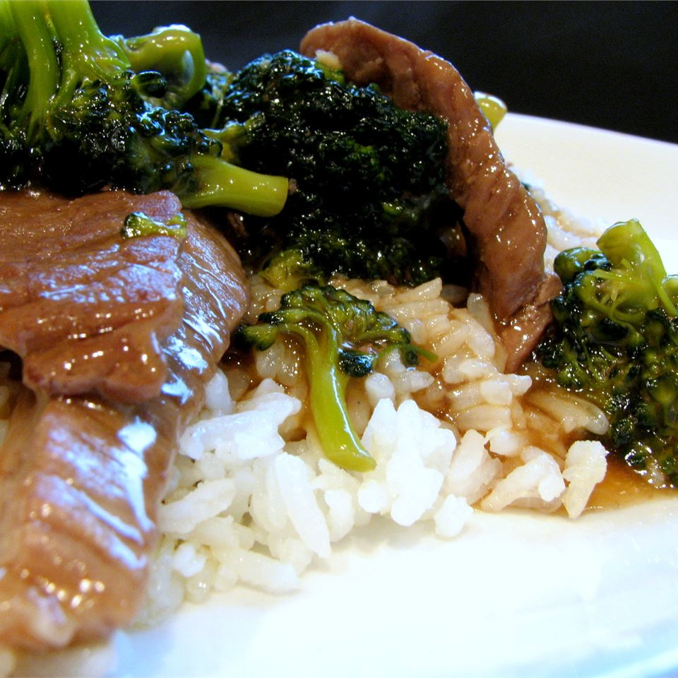

Beef Teriyaki

Description
Very tasty beef teriyaki recipe. So easy to make that even I can do it.
Ingredients
- 1½ cups uncooked glutinous white rice
- 1⅔ cups water
- 1 pound boneless beef sirloin steak (3/4 inch thick)
- 2 tablespoons cornstarch
- 1 (14 ounce) can beef broth
- 2 tablespoons soy sauce
- 1 tablespoon packed brown sugar
- ¼ teaspoon garlic powder
Steps
- Make rice with rice cooker
- Meanwhile, slice beef into very thin strips.
- In a mixing bowl, combine the cornstarch, broth, soy sauce, sugar and garlic powder. Mix thoroughly.
- In a large skillet, over medium/high heat, saute the beef strips until browned and juices evaporate.
- Stir cornstarch mixture into meat. Cook until mixture boils and thickens, stirring frequently. Serve over the cooked rice.